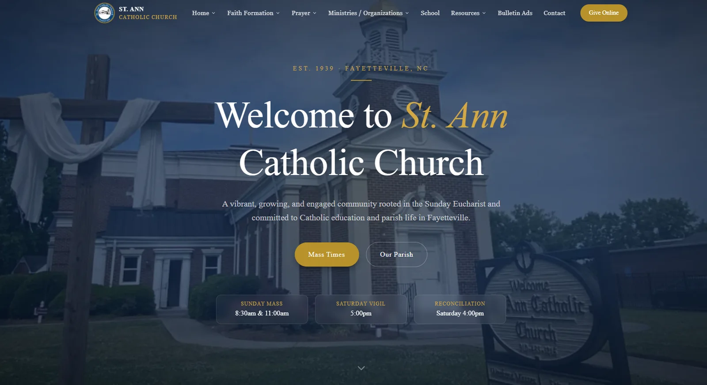
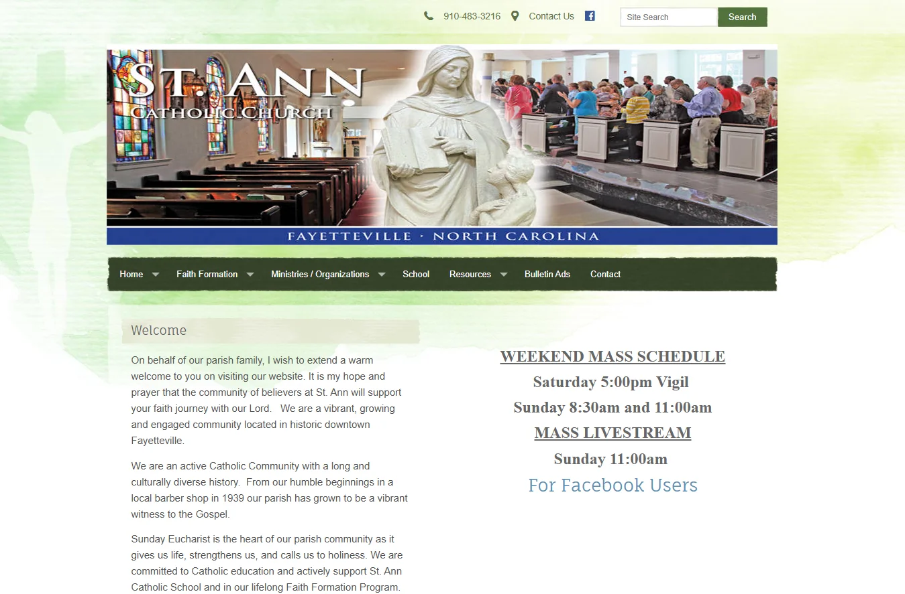

SERVING CHURCHES AROUND NORTH CAROLINA
A website that actually looks like your church.
Tootie Designs designs, builds, and looks after websites for churches — giving, sermons, events, and prayer requests in one place, handled by one person you can actually call. From $100 a month, with no five‑figure cheque up front.
Where to start
You probably recognise one of these.
Most churches we talk to aren’t shopping for a website. They’re trying to solve one specific, nagging problem — and the site is what’s in the way.
-
01 / The site is years old
It doesn’t look like you any more.
The photos are three pastors out of date, the service times are wrong, and nobody quite remembers who set it up. Visitors notice before they ever walk in.
Get a free site review -
02 / You’re the tech person now
And that was never the job.
You volunteered to help with one thing, and now every broken link and password reset lands on you — on top of the role you actually signed up for.
See what we take on -
03 / Giving is buried
Make it two taps, not six.
Your giving platform is fine. Finding it on a phone, mid‑service, from the back row is not. That’s a design problem, not a platform problem.
See the ministry tools -
04 / Too many logins
One number to call.
Website here, giving there, sermons somewhere else, and a different vendor for each. We make them work together and become the single person you ring.
See how it works -
05 / More than one campus
Or a whole network.
Multi‑campus churches, district offices, and church‑planting networks need one system that holds several congregations without cloning the work five times.
Talk about a network
Being found
Nobody’s first visit starts at the door. It starts with a search, a text from a friend, a link on a phone at 9pm — and all of it has to land somewhere.
See what we buildHow it works
Call Design Build Launch Check in
It starts with a real conversation, not a discovery questionnaire — and it doesn’t end at launch. Every church gets a check‑in call each quarter, so problems get found before you have to report them.
Book the first callWhat’s included
Everything your church actually uses — the website, the giving, the sermons, the prayer requests — designed once and looked after every month.
01 Your website
- Custom design, not a template
- Fast and readable on a phone
- “Plan your visit” & service times
- Staff, ministries & small groups
02 Ministry tools
- Online giving, two taps from anywhere
- Sermon archive with audio & video
- Events & calendar
- Prayer requests that reach a human
03 Being found
- Local search & map listings
- Google Ad Grant management
- Photo & video for the site
- Quarterly health check calls
Works with what you already run
- Planning Center
- Pushpay
- Tithe.ly
- Breeze
We don’t replace your giving or church-management platform — we make it work properly inside a site that looks like yours.
Pricing
Monthly. Published. No surprise quote.
A custom church site normally means $2,500–10,000 up front. This is the same work, paid monthly — and the setup fee disappears entirely if you commit to a year.
-
Foundation
$100/month
For a church that needs one good, current site that it never has to think about.
- Custom-designed site, built for your church
- Hosting, updates & security included
- Online giving & sermons integrated
- Content updates handled by us
- A named person you call directly
Setup
Start with Foundation$1,200waived on a 12-month commitment -
Growth Most churches
$250/month
For a growing church running real ministries that each need a home online.
- Everything in Foundation
- Unlimited content updates
- Events, calendar & small-group signup
- Full Planning Center / ChMS integration
- Quarterly digital health check call
Setup
Start with Growth$1,800waived on a 12-month commitment -
Ministry Partner
$500/month
For a church that wants the website working as outreach, not just a noticeboard.
- Everything in Growth
- Local SEO managed monthly
- Google Ad Grant applied for & managed
- Photo & video content production
- Priority turnaround on requests
Setup
Start with Ministry Partner$2,500waived on a 12-month commitment
Multi-campus churches and denominational networks are priced per contract — let’s talk
The range
Every church, its own character.
A storefront plant, a century-old sanctuary, a room with a projector and a coffee bar. The design starts from what your church already is — never from a template with your logo dropped in.


Who you work with
Not a ticket queue. A person, and a number that rings.
The big church-website platforms are cheaper for a reason: you get a login and a help desk. This is the opposite trade — one named person who knows your church and answers the phone.
01 / Your point of contact
Tootie Designs
One person accountable for the design, the build, and every month after.
Tootie Designs works with a deliberately small number of churches, because the promise here isn’t software — it’s that someone picks up. We walk your team through the real site rather than handing over a manual, and call every quarter whether or not anything is broken.
- Direct Your call goes to the person who built your site.
- Named The same person every time — no rotating support queue.
- Honest Published pricing, and we’ll say so when you don’t need the upgrade.
Start the conversation
Fifteen minutes, and an honest answer.
Tell us about your church and what’s frustrating you about the current site. You’ll get a straight read on whether we can help — including if the answer is that you don’t need us. No forms, no funnel, no pitch deck.